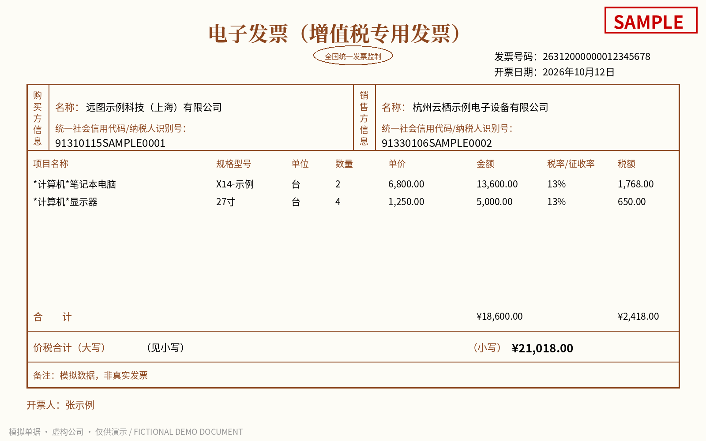
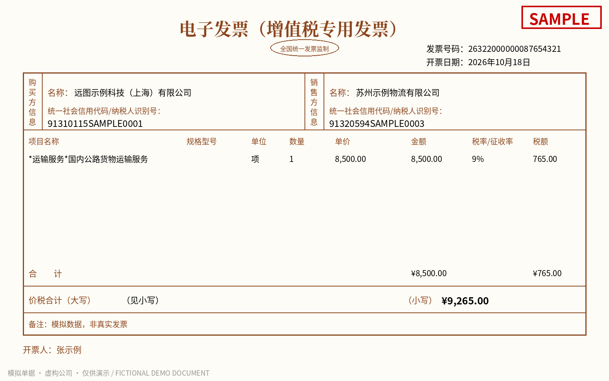
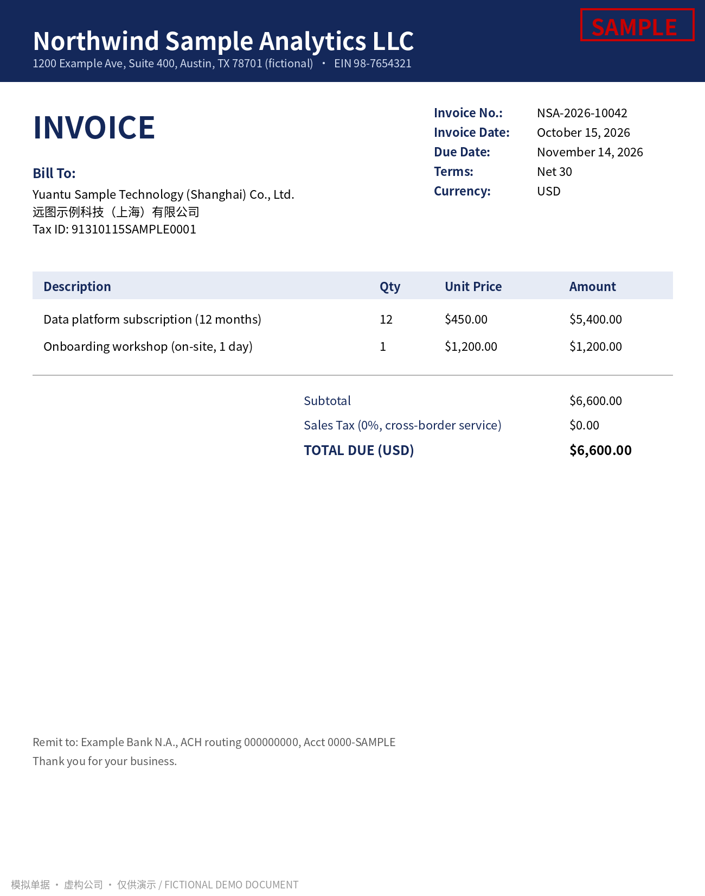
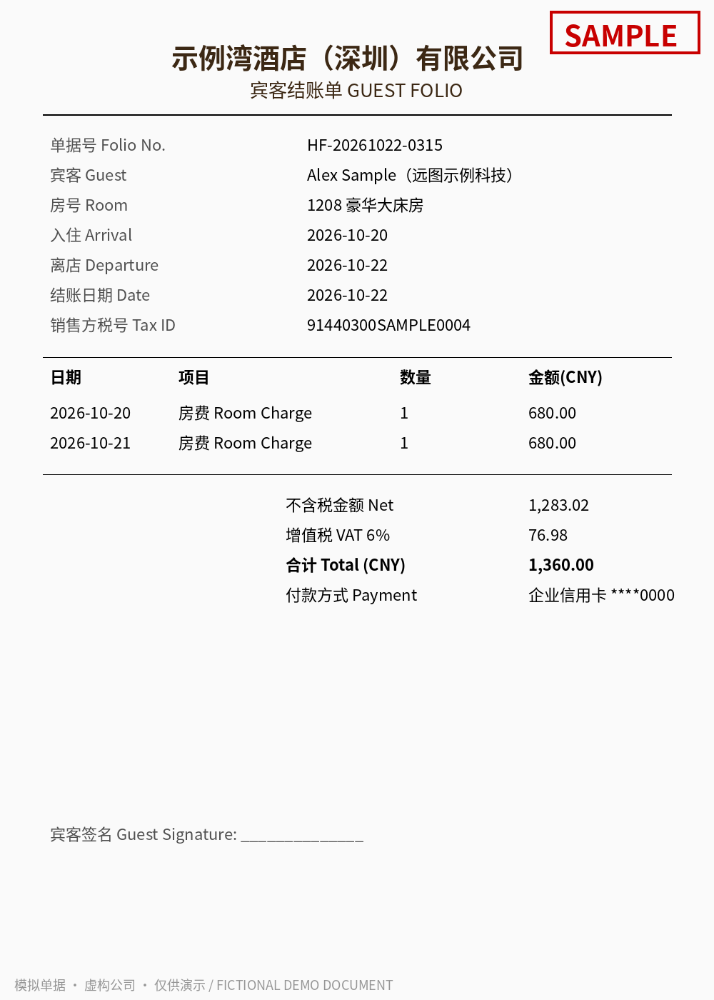
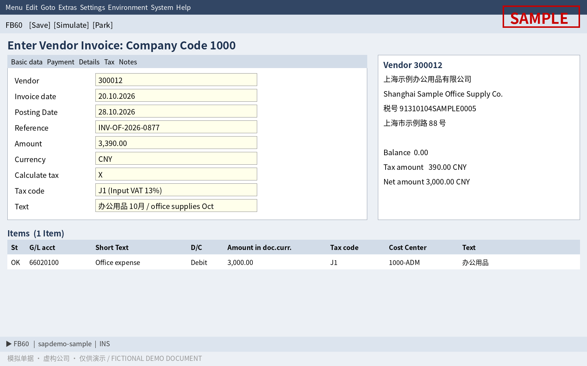

1Business problem
业务问题Accounts-payable teams receive invoices in many formats — Chinese VAT special e-invoices, foreign vendor invoices in USD, hotel folios, even screenshots of SAP entry screens — and key them into FB60 by hand. Reading the text isn't the hard part. Turning it into a correct posting is: the right vendor (LIFNR), tax code (MWSKZ), G/L account (HKONT), a reference number that fits SAP’s 16-character XBLNR, and no duplicate payments.
应付团队收到的单据格式五花八门：数电专票、美元境外发票、酒店水单，甚至 SAP 录入截图，靠人工录入 FB60。难点不在「认字」，而在把识别结果变成正确的过账：供应商、税码、科目要对，参考号要放得进 16 位的 XBLNR，还不能重复付款。
This demo walks through the full path from a document image to a reviewable FB60 posting proposal. Every rule is traceable, and every exception goes to a human reviewer instead of being posted silently.
本 Demo 打通从单据图片到可复核的 FB60 过账建议的全流程，每条规则可追溯，异常一律转人工，不静默放行。
2Architecture & flow
架构流程After extraction the data is cleaned (ISO dates, thousands separators removed, 13 → 0.13) and reconciled: net + tax = gross, net × rate ≈ tax, vendor found. Raw model responses are kept in output/raw/ for audit.
抽取后统一清洗（日期 ISO、去千分位、税率 13→0.13），并做勾稽校验：净额+税额=合计、净额×税率≈税额、供应商是否找到。模型原始返回留档在 output/raw/，便于审计。
3Five sample documents and results
5 张样单与结果对照（取自 output/ 中最后一次真模型运行）Values below are taken directly from output/raw/*.extracted.json and output/posting_proposal.csv (from the retained real-model run). Click any image to view it full size.
以下数值直接取自模型抽取结果与过账建议 CSV；点击图片可看大图。所有单据均为生成的示例数据。
China VAT special e-invoice, 13% 增值税专用发票（数电）13%
doc01_cn_vat_13pct · field accuracy 100.0%
Generated sample · 生成的示例单据Extracted by NIM 模型抽取
| Doc type | cn_vat_special_invoice |
|---|---|
| Invoice no. | 26312000000012345678 |
| Date | 2026-10-12 |
| Seller | 杭州云栖示例电子设备有限公司 |
| Buyer | 远图示例科技（上海）有限公司 |
| Currency | CNY |
| Net | 18,600.00 |
| Tax rate | 13% |
| Tax | 2,418.00 |
| Gross | 21,018.00 |
FB60 posting proposal 过账建议
| LIFNR | 100101 (tax_id(1.0)) |
|---|---|
| MWSKZ | J1 (rate_table) |
| XBLNR | 2000000012345678 |
| XBLNR_ALT / BKTXT | 26312000000012345678 |
| WRBTR (gross) | 21,018.00 CNY |
| Deductible tax | 2,418.00 |
| Non-deductible tax in expense | 0.00 |
| DUP_CHECK | OK 旧规则(前16位)会误判与 BELNR 5100000401 重复 |
| CHECKS | OK |
| # | HKONT | KOSTL | Amount | SGTXT |
|---|---|---|---|---|
| 1 | 66020300 | 1000-IT | 13,600.00 | *计算机*笔记本电脑 |
| 2 | 66020300 | 1000-IT | 5,000.00 | *计算机*显示器 |
20-digit e-invoice number: XBLNR keeps the last 16 digits, the full number goes to XBLNR_ALT/BKTXT. Under the old first-16-digit rule this would have collided with posted document 5100000401; the LIFNR + full-number key returns OK.
China VAT special e-invoice, 9% (freight) 增值税专用发票（数电）9% 运输服务
doc02_cn_vat_9pct · field accuracy 100.0%
Generated sample · 生成的示例单据Extracted by NIM 模型抽取
| Doc type | cn_vat_special_invoice |
|---|---|
| Invoice no. | 26322000000087654321 |
| Date | 2026-10-18 |
| Seller | 苏州示例物流有限公司 |
| Buyer | 远图示例科技（上海）有限公司 |
| Currency | CNY |
| Net | 8,500.00 |
| Tax rate | 9% |
| Tax | 765.00 |
| Gross | 9,265.00 |
FB60 posting proposal 过账建议
| LIFNR | 100102 (tax_id(1.0)) |
|---|---|
| MWSKZ | J2 (rate_table) |
| XBLNR | 2000000087654321 |
| XBLNR_ALT / BKTXT | 26322000000087654321 |
| WRBTR (gross) | 9,265.00 CNY |
| Deductible tax | 765.00 |
| Non-deductible tax in expense | 0.00 |
| DUP_CHECK | OK 旧规则(前16位)会误判与 BELNR 5100000415 重复 |
| CHECKS | OK |
| # | HKONT | KOSTL | Amount | SGTXT |
|---|---|---|---|---|
| 1 | 66010400 | 1000-LOG | 8,500.00 | *运输服务*国内公路货物运输服务 |
Under the old first-16-digit rule this would have collided with posted document 5100000415; last-16 rule + LIFNR/full-number key returns OK.
US vendor invoice (USD, overseas service) 美国供应商发票（美元，境外服务）
doc03_us_vendor_invoice · field accuracy 100.0%
Generated sample · 生成的示例单据Extracted by NIM 模型抽取
| Doc type | us_vendor_invoice |
|---|---|
| Invoice no. | NSA-2026-10042 |
| Date | 2026-10-15 |
| Seller | Northwind Sample Analytics LLC |
| Buyer | Yuantu Sample Technology (Shanghai) Co., Ltd. |
| Currency | USD |
| Net | 6,600.00 |
| Tax rate | 0% |
| Tax | 0.00 |
| Gross | 6,600.00 |
FB60 posting proposal 过账建议
| LIFNR | 200201 (tax_id(1.0)) |
|---|---|
| MWSKZ | J0 (rate_table) |
| XBLNR | NSA-2026-10042 |
| XBLNR_ALT / BKTXT | NSA-2026-10042 |
| WRBTR (gross) | 6,600.00 USD |
| Deductible tax | 0.00 |
| Non-deductible tax in expense | 0.00 |
| DUP_CHECK | OK |
| CHECKS | OK |
| # | HKONT | KOSTL | Amount | SGTXT |
|---|---|---|---|---|
| 1 | 66021000 | 1000-IT | 5,400.00 | Data platform subscription (12 months) |
| 2 | 66030100 | 1000-IT | 1,200.00 | Onboarding workshop (on-site, 1 day) |
Two lines mapped to two different G/L accounts by keyword (subscription / onboarding workshop). J0 is a demo simplification — see Limitations.
Hotel guest folio (receipt, not a VAT special invoice) 酒店水单（非专票）
doc04_hotel_receipt · field accuracy 100.0%
Generated sample · 生成的示例单据Extracted by NIM 模型抽取
| Doc type | expense_receipt_hotel |
|---|---|
| Invoice no. | HF-20261022-0315 |
| Date | 2026-10-22 |
| Seller | 示例湾酒店（深圳）有限公司 |
| Buyer | Alex Sample （远图示例科技） |
| Currency | CNY |
| Net | 1,283.02 |
| Tax rate | 6% |
| Tax | 76.98 |
| Gross | 1,360.00 |
FB60 posting proposal 过账建议
| LIFNR | 100103 (tax_id(1.0)) |
|---|---|
| MWSKZ | J9 (nondeductible:receipt_doc_type) |
| XBLNR | HF-20261022-0315 |
| XBLNR_ALT / BKTXT | HF-20261022-0315 |
| WRBTR (gross) | 1,360.00 CNY |
| Deductible tax | 0.00 |
| Non-deductible tax in expense | 76.98 |
| DUP_CHECK | OK |
| CHECKS | 不可抵扣进项_需换开专票才能抵扣 |
| # | HKONT | KOSTL | Amount | SGTXT |
|---|---|---|---|---|
| 1 | 66020500 | 1000-ADM | 680.00 | 房费 Room Charge |
| 2 | 66020500 | 1000-ADM | 680.00 | 房费 Room Charge |
No buyer tax ID and receipt doc type → J9 non-deductible: full 1,360.00 to travel expense, deductible input tax 0 (76.98 stays in expense).
SAP FB60 entry screenshot SAP FB60 录入截图
doc05_sap_fb60_screen · field accuracy 100.0%
Generated sample · 生成的示例单据Extracted by NIM 模型抽取
| Doc type | sap_fb60_screenshot |
|---|---|
| Invoice no. | INV-OF-2026-0877 |
| Date | 2026-10-20 |
| Seller | 上海示例办公用品有限公司 |
| Buyer | — |
| Currency | CNY |
| Net | 3,000.00 |
| Tax rate | 13% |
| Tax | 390.00 |
| Gross | 3,390.00 |
FB60 posting proposal 过账建议
| LIFNR | 300012 (tax_id(1.0)) |
|---|---|
| MWSKZ | J1 (printed) |
| XBLNR | INV-OF-2026-0877 |
| XBLNR_ALT / BKTXT | INV-OF-2026-0877 |
| WRBTR (gross) | 3,390.00 CNY |
| Deductible tax | 390.00 |
| Non-deductible tax in expense | 0.00 |
| DUP_CHECK | OK |
| CHECKS | OK |
| # | HKONT | KOSTL | Amount | SGTXT |
|---|---|---|---|---|
| 1 | 66020100 | 1000-ADM | 3,000.00 | Office expense |
Tax code J1 is printed on the screen and is used as-is (priority-1 rule: printed tax code wins).
4Accuracy (real NIM runs, 2026-10-29, Beijing time)
准确率（NVIDIA NIM 真模型运行，2026-10-29 北京时间）Each run is scored field-by-field against hand-written ground truth: 14 extraction fields plus 7 posting fields (LIFNR, MWSKZ, XBLNR, XBLNR_ALT, HKONT, expense total, deductible tax) for each of the 5 documents.
每轮按字段与标准答案比对：每张单据 14 个抽取字段 + 7 个过账字段（供应商、税码、XBLNR、XBLNR_ALT、科目、费用总额、可抵扣税额）。
| Run | Field accuracy | What happened 说明 |
|---|---|---|
| First real run (before fixes)首次真跑（修正前） | 95.2% | doc01 invoice number read with one extra “0” (21 digits); doc05 G/L fell through to fallback 66029999; doc04 ground-truth buyer field was missing.doc01 发票号多读一个 0（21 位）；doc05 科目落到兜底；doc04 标准答案漏填购买方。 |
| After fixes — run 1修正后第 1 轮 | 97.1% | doc01 again read as 21 digits; the digit-length check triggered a re-read and the model re-read correctly, but the parser did not yet handle “reasoning text + JSON”, so it was routed to human review. Parser fixed.位数校验触发重读且重读正确，但解析器当时没处理好「推理文字 + JSON」，转了人工（已修）。 |
| After fixes — runs 2–6修正后第 2–6 轮 | 100% ×5 | All 5 documents matched ground truth on all scored fields in 5 consecutive runs (2.5–9 s per document in run 2). output/ holds run 6 (2026-10-29 11:05 Beijing time), where every invoice number passed the digit-length check on the first read.连续 5 轮 5 张全部字段与标准答案一致（第 2 轮每张 2.5–9 秒）；output/ 保留第 6 轮结果（2026-10-29 11:05 北京时间），发票号首读即通过位数校验。 |
A separate test fed a 21-digit number in deliberately; the re-read returned the correct 20-digit number and it was adopted automatically. A --simulate-noise mode injects recognition errors to prove the report catches them.
单独测试：人为喂入 21 位号码，重读得到正确的 20 位号码并自动采用。另有 --simulate-noise 模式人为注入识别错误，验证报告能抓出来。
Note: this is a 5-document synthetic sample set; the scores describe these runs only and are not a claim about production accuracy. 注：仅 5 张生成样单，分数只代表这几轮运行，不代表生产准确率。
5Key design decisions
关键设计XBLNR keeps the last 16 digits XBLNR 取后 16 位
China e-invoice numbers are 20 digits; the leading digits are year + region code and are nearly identical across a batch, so the first 16 digits collide. The last 16 keep the serial number. Example: 26312000000012345678 → 2000000012345678.
数电发票 20 位，前几位是年份+地区代码，同批基本相同，留前 16 位会撞号；后 16 位含流水号。
Full number in XBLNR_ALT and BKTXT 全号写入 XBLNR_ALT / BKTXT
The complete invoice number goes to BKPF-XBLNR_ALT (26 chars; longer numbers are truncated and flagged invoice_no>26_review) and to the header text BKTXT so it is visible in FB03 and line-item reports.
完整发票号写入备选参考号 XBLNR_ALT（26 位）和抬头文本 BKTXT，FB03 / 行项目报表直接可见。
Duplicate check on LIFNR + full number 查重键 = 供应商 + 完整发票号
The truncated XBLNR is never used as the key. Checked against posted history (simulated BKPF/BSIK) and the current batch. In this run, doc01 and doc02 would have been false duplicates under the old first-16 rule (vs. BELNR 5100000401 / 5100000415); the new key returns OK.
不用截断后的 XBLNR。先查已过账历史，再查本批次。按旧规则 doc01、doc02 会被误判重复，新规则正确放行。
Hotel folio → J9 non-deductible 水单记 J9 不可抵扣
A receipt/folio, or any document with VAT but no buyer tax ID, cannot be used to deduct input VAT. Gross amount goes fully to expense; no input-tax line. For doc04, the full 1,360.00 goes to 66020500. Posting it under J3 (1,283.02 + 76.98) would have over-deducted 76.98.
水单/收据或无购买方税号 → J9：价税合计全额进费用，不单列进项税。原按 J3 会多抵 76.98。
Invoice-number digit-length check → re-read → human review 发票号位数校验：重读，仍不合格转人工
For China VAT documents a numeric invoice number must be 20 digits (e-invoice) or 8 digits (legacy). If it isn't, the model is asked once to re-read just the invoice number. If the re-read passes it is adopted and logged in INVNO_CHECK (original → re-read); if not, the original is kept and the document is flagged invoice_no_format_review for a human. No expected numbers are hard-coded.
中国增值税发票号须为 20 位（数电）或 8 位（老版）；不符则让模型只重读发票号一次，合格就采用并留痕，仍不合格就转人工复核，不静默放行；规则不写死任何号码。
Case example: in one earlier run the model read doc01’s invoice number as 21 digits (263120000000012345678, one extra “0”). The length check caught it and triggered a re-read, which returned the correct 20-digit number 26312000000012345678.
案例：在较早的一轮中，模型把 doc01 的发票号读成 21 位（多一个 0），位数校验抓到后触发重读，重读得到正确的 20 位号码。
6Limitations & assumptions
局限与假设- Assumption — overseas service (doc03, US vendor): this is a cross-border service. In a real business the domestic payer must withhold VAT and the related surcharges on behalf of the foreign vendor. The demo books it with tax code J0 as a simplification; a production design needs the withholding-tax postings and the related tax codes.
假设——境外服务（doc03 美国供应商）：真实业务中境内付款方须代扣代缴增值税及附加税；Demo 记 J0 只是简化处理。
- Digit-length check only catches length errors. A misread digit that keeps the length correct will pass. Production should cross-check the invoice number (and amounts) against the e-invoice’s embedded text layer or the tax bureau’s invoice verification platform.
位数校验只能抓位数错误，位数对但个别数字读错抓不到；上生产应用发票电子文字层或税务局发票查验平台交叉核对。
- Currency (doc03): the document currency stays USD and the demo does no currency conversion. In a real FB60 posting, SAP converts the amount to local currency CNY using the exchange rate from table TCURR, rate type M, for the posting date; the rate can also be entered manually in the document header.
币种（doc03）：单据币种保持 USD，Demo 不做折算。真实 FB60 过账时，SAP 按过账日期取 TCURR 表中汇率类型 M 的汇率折算为本位币 CNY，也可在凭证抬头手工输入汇率。
- All documents are generated sample data — five synthetic documents, fictional companies and tax IDs, simulated master data and posting history. Accuracy figures apply to this set only.
全部为生成的示例单据与模拟主数据，准确率只代表这 5 张样单。
- The J9 rule covers receipts/folios and documents without a buyer tax ID. Other non-deductible cases (e.g. ordinary VAT invoices) and special deductible cases (e.g. passenger transport) need rules per actual tax policy.
J9 只覆盖水单/收据和无购买方税号；普票等其他不可抵扣情形及旅客运输等可计算抵扣特例需按税务口径补规则。
- XBLNR_ALT must first be activated in SAP customizing before it appears in FB60; the demo only produces the field value. The output is a proposal for review — it does not post to SAP.
XBLNR_ALT 需先在后台配置激活；Demo 只产出字段值和过账建议，不直接过账。
- G/L and cost-center mapping uses a keyword table with placeholder cost centers; unmatched lines fall back to 66029999 for review. The hosted API has free-tier limits; the script retries 429/5xx up to 3 times.
科目按关键词表匹配，成本中心为占位值，未命中落兜底科目待复核；托管 API 有限流，脚本对 429/5xx 自动重试 3 次。
- Next steps: BAPI_INCOMINGINVOICE_CREATE / FB60 BDC template export, a human-review UI, more real anonymised samples.
下一步：BAPI / BDC 模板导出、人工复核界面、更多真实脱敏样本。